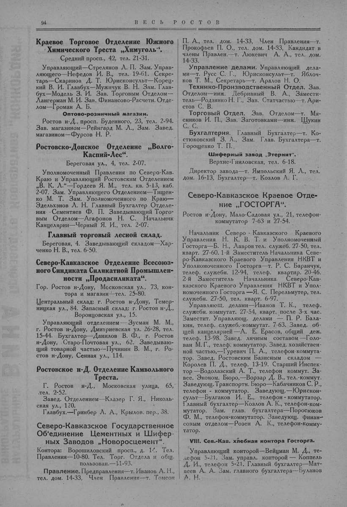

Лист источника 144
Скан

Распознанный текст
94 ВЕСЬ РОСТОВ
Краевое Торговое Отделение Южного
Химического Треста „Химуголь“.
Средний просп., 42, тел. 21-31.
Управляющий—Стрелянов Л. П. Зам. Управ-
ляющего—Нефедов И. В., тел. 19-61. Секре-
тарь—Скаринов Д. Т. Юрисконсульт—Корец-
кий В. И. Главбух—Мужичук В. Н. Зам. Глав-
бух—Модель З. И. Зав. Торговым Отделом—
Лангерман М. И. Зав. Финансово-Расчетн. Отде-
лом—Громан А. Б.
Оптово-розничный магазин.
Ростов н-Д., просп. Буденного, 23, тел. 2-94.
Зав. магазином—Рейнгард М. Л., Зам. Завед.
магазином—Фурсов Н. Р.
Ростовско-Донское Отделение „Волго-
Каспий-Лес“.
Береговая ул., 4, тел. 2-07.
Уполномоченный Правления по Северо-Кав.
Краю и Управляющий Ростовским Отделением
„В. К. Л.“—Гордеев Я. М., тел. кв. 5-13, каб.
2-07. Зам. Управляющего Отделением—Тищен-
ко М. Т. Зам. Уполномоченного по Краю—
Эдельхэнов Л. Н. Главный Бухгалтер Отделе-
ния - Сементяев Ф. П. Заведывающий Торго-
вым Отделом—Агафонов Н. С. Начальник
Канцелярии—Черный Я. И., тел. 2-07.
Главный торговый лесной склад.
Береговая, 4. Заведывающий складом—Хар-
ченко Н. В., тел. 6-50.
Северо-Кавказское Отделение Всесоюз-
ного Синдиката Силикатной Промышлен-
ности „Продасиликата“.
Гор. Ростов н-Дону, Московская ул., 73, кон-
тора и магазин—тел. 25-80.
Центральный склад: г. Ростов н-Дону, Темер-
ницкая ул., 84. Запасный склад: г. Ростов н-Д.,
Воронцовская ул., 15.
Управляющий отделением — Зусман М. М.,
г. Ростов н-Дону, Дмитриевская ул. 26-28, тел.
15-44. Бухгалтер—Данилов В. Ф., г. Ростов
н-Дону, Старо-Почтовая ул., 62. Заведываю-
щий товарной частью—Пучинин В. М., г. Ро-
стов н-Дону, Сенная ул., 114.
Ростовское н-Д. Отделение Камвольного
Треста.
Г. Ростов н-Д., Московская улица, 65,
тел. 2-52.
Завед. Отделением—Клазер Г. Я., Николь-
ская ул., 120.
Главбух.—Гринбер Л. А., Крылов. пер., 38.
Северо-Кавказское Государственное
Об'единение Цементных и Шифер-
ных Заводов „Новоросцемент“.
Контора: Ворошиловский просп., д. 16. Тел.
Правления—10-80. Тел. Торг. Отдела и общ.
пользован.—11-93.
Правление. Предправления—т. Иванов А. Н.,
тел. дом. 14-33, Член Правления—т. Томсон
П. А., тел. дом. 14-33, Член Правления—т.
Прокофьев П. О., тел. дом. 14-33, Кандидат в
члены Правлен.—т. Люкевич А. А., тел. дом.
14-33.
Управление делами. Управляющий дела-
ми—т. Русс С. Г., Юрисконсульт—т. Яблоч-
ков Т. М., Секретарь—т. Аралов Н. О.
Технико-Производственный Отдел. Зав.
Отделом—инж. Дебривный В. А., Замести-
тель—Родзянко Н. Г., Зав. Статчастью—т. Ари-
стов С. В.
Торговый Отдел. Зав. Отделом—т. Мя-
сников И. П., Зав. Заготовками—инж. Щукин
С. С.
Бухгалтерия. Главный Бухгалтер—т. Ко-
стюковский З. А., Зам. Глав. Бухгалтера—т.
Горощенко Т. П.
Шиферный завод „Этернит“.
Верхне-Гниловская, тел. 6-18.
Директор завода—т. Ямпольский Я. Л., тел.
дом. 16-13, Бухгалтер—т. Козлов А. Г.
Северо-Кавказское Краевое Отде-
ние „ГОСТОРГА“.
Ростов н-Дону, Мало-Садовая ул., 21, телефон-
коммутатор 7-63 и 27-54.
Начальник Северо - Кавказского Краевого
Управления Н. К. В. Т. и Уполномоченный
Госторга—Б. Н., Лавров тел. служеб. 27-50, тел.
кварт. 27-60. 1-й Заместитель Начальника Севе-
ро-Кавказского Краевого Управления НКВТ и
Уполномоченного Госторга—т. Р. С. Баранчук,
телеф. служебн. 12-94, телеф. квартир. 20-46.
2-й Заместитель Начальника Северо-Кав-
казского Краевого Управления НКВТ и Упол-
номоченного Госторга—Я. С. Перельмутер, тел.
служебн. 27-50, тел. кварт. 6-97.
Управляющ. делами—Иванов Т. К., телеф.
служебн. коммутат. 27-54, кварт. после 3-х час.
Заместит. Управляющ. делами — П. Р. Бала-
кин, телеф. служеб.-коммутат. 7-63. Завед. об-
щей канцелярией — А. Е. Ерасов, общий деж.
телеф. 13-98. Завед. личным составом — Голо-
ван М. Г., телеф. коммутатор. Завед. хозяйствен-
ной частью,—Гуревич П. А., телефон-коммута-
тор. Завед. Ростовским Базисным складом —
Королев П. Д., телеф. 13-19. Старший Инспек-
тор —Водолазский А. Т., телефон коммут. За-
вее. Эконом. Бюро,—Ворзар Д. В., тел.-коммут.
Заведующ. Транспортн. Бюро—Кабачников С. Р.,
телефон - коммутатор. Заведующ.—Юрискон-
сульт—Булгаков И. Е., телефон - коммутатор.
Главный бухгалтер—Козлов А. К., телефон-ком-
мутатор. Зам. глав. бухгалтера—Поросюков
Ф. М., телефон-коммутатор. Заведующ. Финан-
совым отделом—Розен А. К., телефон-комму-
татор.
VIII. Сев.-Кав. хлебная контора Госторга.
Управляющий конторой—Вейцман М. Д., те-
лефон 5-21. Зам. управл. конторой — Коппель
Д. И., телефон 5-21. Главный бухгалтер—Мат-
веев А. А. Зам. главного бухгалтера—Буланов
А. Н.